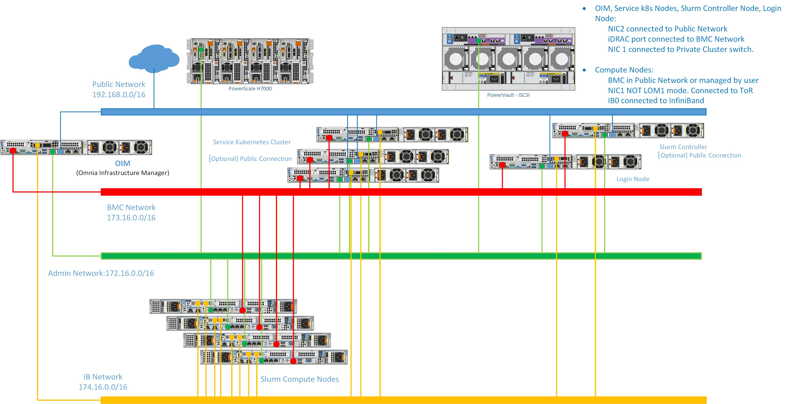
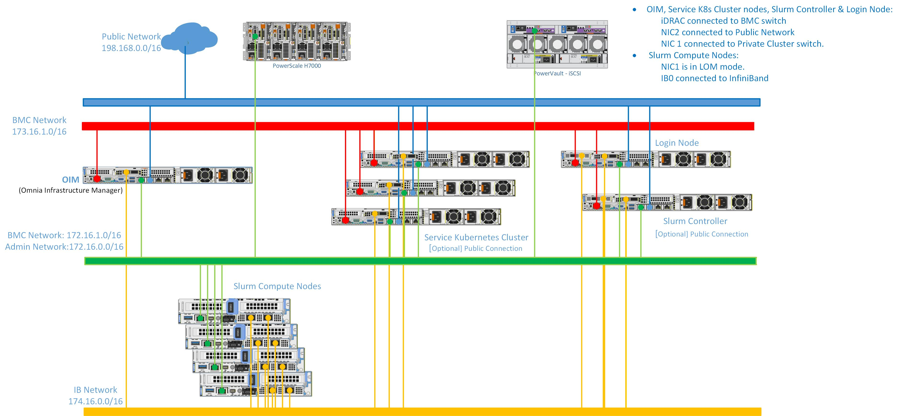

Network Topologies
Omnia supports three network topologies that accommodate different data center environments, cabling constraints, and security requirements. Choosing the right topology is one of the first decisions an administrator makes before deploying a cluster. This page explains each topology, the networks that compose it, and the trade-offs involved.
Network segments
Regardless of which topology you choose, Omnia works with four logical network segments. Each segment carries a distinct type of traffic and has different security and bandwidth requirements.
Network segments
Network |
Color code |
Purpose |
|---|---|---|
Public |
Blue |
Connects the OIM to the internet (or campus network) for downloading packages, accessing external services, and administrator SSH access. In air-gapped environments, this network may be absent or limited to a bastion host. |
BMC |
Red |
Out-of-band management network connecting the OIM to each server’s iDRAC (Baseboard Management Controller). Used for hardware discovery, power control, BIOS configuration, and firmware updates. Traffic on this network is Redfish/IPMI and should be isolated from user-accessible networks for security. |
Admin |
Green |
In-band provisioning and management network. Carries PXE boot traffic, OS image delivery, Ansible SSH connections, and Pulp repository access. This is the primary network over which the OIM manages cluster nodes. |
InfiniBand / High-speed |
Yellow |
Optional high-bandwidth, low-latency fabric for MPI communication, RDMA, and parallel filesystem traffic. Typically InfiniBand HDR/NDR or high-speed Ethernet (100/200/400 GbE). Not managed by Omnia directly but supported through InfiniBand configuration playbooks. |
Note
Omnia supports classless IP addressing (CIDR notation) across all network segments. You are not limited to traditional Class A, B, or C boundaries.
Dedicated topology
In the Dedicated topology, each network segment uses a physically separate NIC and switch infrastructure. This is the most common topology for production HPC clusters.
Note
The following diagram is for representational purposes only.

Characteristics
The BMC network is physically isolated—iDRAC ports connect to a dedicated management switch that only the OIM can reach.
The Admin network has its own switch fabric, ensuring that provisioning traffic (large OS images, package downloads) does not compete with BMC commands or user workloads.
InfiniBand (if present) uses a separate fabric with its own subnet manager.
When to use Dedicated topology
Security-sensitive environments where BMC traffic must be air-gapped from all other networks.
Large clusters (100+ nodes) where bandwidth isolation is important.
Environments with existing separate management and compute switch infrastructure.
Trade-offs
Requires more NICs per server (minimum 3, typically 4).
Requires more switches and cabling.
Provides the strongest isolation and the most predictable performance.
Hybrid topology
The Hybrid topology combines elements of both Dedicated and Shared LOM: the Admin and BMC networks share a physical connection (like Shared LOM), but the compute / high-speed network is on a separate, dedicated fabric.
Note
The following diagram is for representational purposes only.

Characteristics
Management traffic (BMC + Admin) is consolidated on shared ports, reducing management-side cabling.
Compute traffic (MPI, RDMA, parallel I/O) runs on a dedicated high-speed fabric, ensuring that management operations never impact job performance.
Balances cabling simplicity with performance isolation.
When to use Hybrid topology
Medium to large clusters that need high-speed compute fabric isolation but want to simplify management-network cabling.
Environments adding InfiniBand or high-speed Ethernet to an existing shared-LOM deployment.
Most common topology for AI/ML training clusters where GPU-to-GPU communication bandwidth is critical.
Trade-offs
Management traffic still shares a link (same trade-offs as Shared LOM for the management plane).
Compute traffic is fully isolated, providing deterministic performance for MPI and RDMA workloads.
Choosing a topology
Topology comparison
Criterion |
Dedicated |
Shared LOM |
Hybrid |
|---|---|---|---|
NICs per node |
3–4 |
2–3 |
2–3 |
Switches required |
3–4 separate |
2 |
2–3 |
BMC isolation |
Physical |
Logical (VLAN) |
Logical (VLAN) |
Compute isolation |
Physical |
Shared |
Physical |
Cabling complexity |
High |
Low |
Medium |
Best for |
Large production |
Lab / small |
AI/ML training |
Note
The network topology is configured during the OIM preparation phase via
network_spec.yml. Changing the topology after provisioning requires
re-running the network configuration playbooks and may require physical
re-cabling.
IP addressing and DHCP
Omnia uses CoreDHCP on the OIM to assign IP addresses to nodes during PXE boot. Addresses can be assigned from:
Static pools – Defined in the mapping file, where each node receives a pre-assigned Admin IP and BMC IP based on its MAC address or service tag.
Dynamic ranges – CoreDHCP assigns addresses from a configured CIDR range on a first-come, first-served basis during initial discovery.
Static assignment is recommended for production clusters because it makes network troubleshooting and firewall rule management straightforward.
Note
Architecture – How the OIM connects to each network segment.
Composable Roles – How the mapping file associates nodes with IP addresses across network segments.
If you have any feedback about Omnia documentation, please reach out at omnia.readme@dell.com.